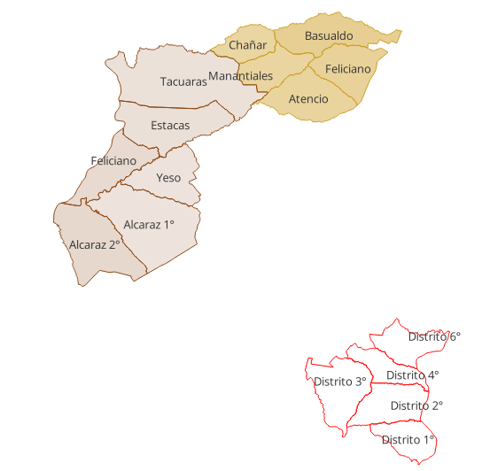
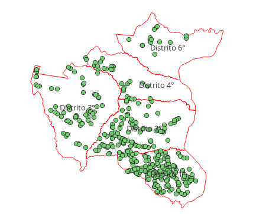
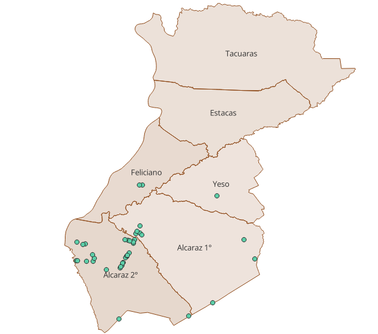
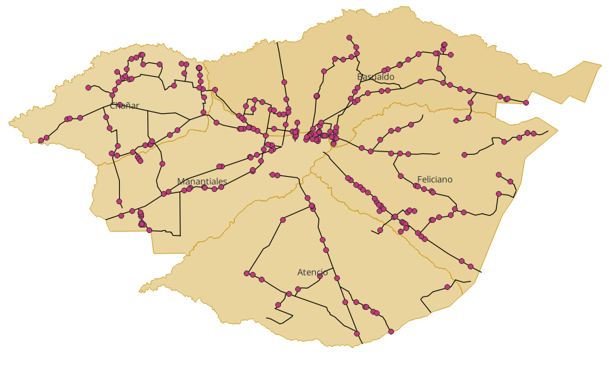

A way to read the territory
There is a way to read a territory that conventional maps do not show. It is not enough to know what a province produces: it is necessary to understand how it produces, at what scale, and which assets remain underused.
This report compares three departments in Entre Rios that share the same province but operate under very different productive logics: Feliciano in the north, La Paz in the center-west, and Colon in the east, along the Uruguay River.
The three territories were surveyed through satellite remote sensing by Arara's Productive Observatory, using field data from 2024-2026. This is not a ranking. It is a reading of differences and of what those differences say about the productive future of the territory.

Where are Entre Rios' largest poultry sheds?
Anyone flying over Colon through satellite imagery will see something that does not appear in the other two departments: long, parallel metal structures with bright galvanized roofs repeated across the department's districts. They are poultry production sheds.
In Colon, poultry accounts for 50% of surveyed establishments and its physical infrastructure totals 168 hectares of built roof area, the highest concentration of covered surface identified in the study.
This matters because that roof area is not only productive infrastructure: it is also uninstalled solar capacity, a surface that could generate renewable energy at commercial scale.
Within Colon, poultry infrastructure is not concentrated in a single point: District 1 leads with 58.9 hectares of roof area, followed by District 2 with 51.0 hectares and District 3 with 36.2 hectares.

La Paz has poultry infrastructure concentrated with surgical precision: its 38 poultry farms represent only 5% of the department's registry, but their roof area totals 27 hectares and explains 70% of installed capital.
In Feliciano, by contrast, that metallic brightness of intensive production sheds is practically absent. Poultry is not present in the registry. Open fields, paddocks and extensive cattle breeding dominate the landscape.
The field that never stops: cattle in three versions
If one activity connects the three departments, it is cattle. It is present in all three, but not in the same form or at the same scale.
In Feliciano, cattle represent 78% of the productive registry. But this is not feedlot or intensive fattening: it is extensive cow-calf production, in small and medium-sized farms, based on natural pasture paddocks.
The most revealing case is Chanar: its 79 establishments account for 8,670 hectares of paddocks, almost equivalent to the combined area of the other four districts. The land is there, but distributed among many small producers with low fixed-capital intensity.
In La Paz, cattle coexist in tension with poultry. Cattle represent 61% of the registry, but districts specialize. Alcaraz 2 is the breaking point: cattle producers coexist with poultry farms that far exceed them in installed capital.

In Colon, cattle rank second with 33% of the registry. This is not a marginal position: there are 255 cattle establishments, but they operate in the same territory as poultry, with consequences for land prices and investment logics.
Who are the smallest? Who are the largest?
The size of an establishment is more than a physical fact: it signals investment capacity, access to technology and vulnerability to price shocks.
| Department | Small | Medium | Very large |
|---|---|---|---|
| Feliciano | 73.9% | 26.1% | 0% |
| La Paz | 56% | 41% | 3% |
| Colon | 45% | 41% | 5% |
Feliciano is the department of small producers. 73.9% of its establishments are small, and the very-large category does not exist in the registry. That absence indicates that capital accumulation at scale has not taken place there.
La Paz shows the beginning of a transition: 21 very large establishments concentrate 38% of the department's installed capital. The polarization between many small producers and a few very large units is the signature of a territory where intensive poultry coexists with subsistence cattle.
Colon has the most balanced scale structure among the three. Its stronger middle segment suggests that the poultry chain did not concentrate only in large units, but also incorporated medium-scale producers.
The territory the market has not valued yet
Feliciano has the best solar resource in Entre Rios. Ministry of Energy irradiation maps place northern Entre Rios at 1,800 kWh/m2/year, compared with 1,550 kWh/m2/year along the Parana River margin.
That resource differential is permanent, free and does not require investment to exist. It is there every day, and no one is taking advantage of it.
Feliciano's paradox goes further. Its paddocks and vegetation masses, including natural pastures, native woodland and riverside vegetation, operate as a first-rate environmental asset: a carbon sink.

What the numbers say, and what they do not
Satellite surveying is extremely precise in what it can measure: sheds, paddocks, land parcels and roads. But there are territorial dimensions that no spectral index can capture.
In Feliciano, the missing information is the difference between a diagnosis and a policy: the data show little recent investment in the north, but do not explain whether that is due to credit, logistics or the lack of available instruments.
In La Paz, the data show concentrated poultry capital and small cattle producers in a position of severe logistical vulnerability. In Colon, poultry infrastructure concentration raises questions about resilience to sanitary crises, price cycles or logistical disruptions.
Three-sentence synthesis
Methodological note
The data come from Arara's survey of Productive Establishments using the Landbau methodology: satellite information capture through spectral brightness detection of galvanized metal roofs and land-cover classification for paddocks and parcels.
The surveys cover La Paz, Colon and Feliciano. Solar irradiation data come from Argentina's Ministry of Energy Solar Atlas, 2010-2020 series. Carbon footprint and carbon-sink analysis is qualitative and indicative; it does not include direct biomass measurement or credit certification.